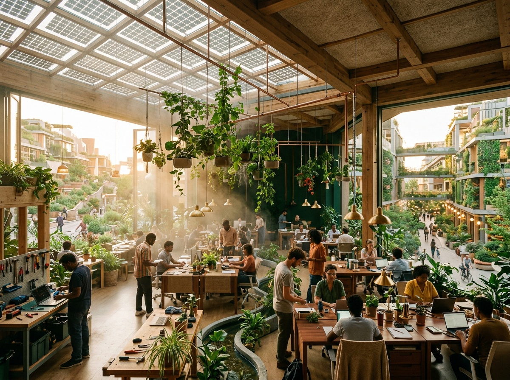
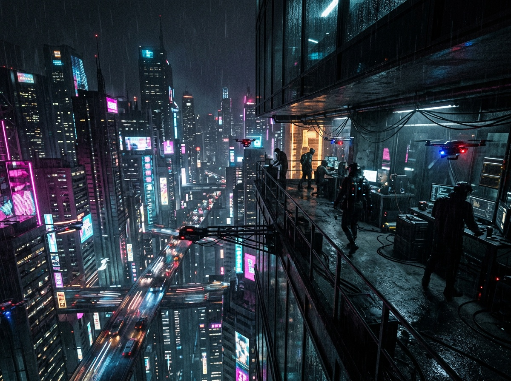

Low and walkable. The office dissolves into parkland; you can't tell where the building ends and the park begins.

One enormous structure holds everything: work, homes, food, transit. You need never go outside.

Energy is visible and free. Solar skins, edible facades, water and power on show. Repair is a civic ritual.

Vertical, neon, always awake. The corporation is the weather. You work inside the machine.

No centre at all. An acre each, work wherever the network reaches. The office comes to you.

The future as the 1930s imagined it. Deco geometry, brass, streamlined curves. Rooms remember how they once felt.